Recommendation Systems • Graph Neural Networks
- Overview
- Motivation
- Key terms
- Popular GNN Architectures for RecSys
- Benefits of GNNs in RecSys
- Loss functions
- Walkthrough
- Seasonality
- Summary
- Case Studies
- References
Overview
- Graph Neural Networks (GNNs) are a type of neural network architecture designed for processing graph-structured data. Graphs are a versatile data structure that can represent complex relationships, and GNNs extend traditional neural networks to operate directly on graphs.
- GNNs can aggregate information from neighboring nodes, capture local and global graph structures, and make predictions based on graph-structured data.
- They have been successfully applied to various applications, such as node classification, link prediction, and recommendation systems.
- Popular GNN architectures include Graph Convolutional Networks (GCNs), Graph Attention Networks (GATs), GraphSAGE, and GGNNs.
- GNNs are used in several industry applications such as maps for Google/Uber and social networks for LinkedIn, Instagram, and Facebook.
- GNNs are able to take advantage of both content information for entities (semantic), such as user and item features, as well as the underlying relationship between entities (structural), which may include user-item interactions or relationships with other entities, like sports. In contrast, traditional models often rely on just one of these sources of information, usually semantic.
- Implementing GNNs has been made easy by libraries such as PyTorch Geometric or Deep Graph Library.
- The image below (source) shows the different types of graphs. Note that recommender systems usually follow a bipartite graph.
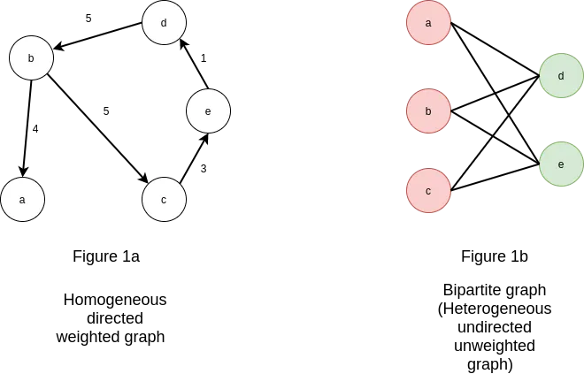
Motivation
- Remember a graph is made up of sets of nodes or vertices that are connected by edges or links. At a high level, GNNs can be though of as an encoder-decoder architecture where the user and items are the nodes in the graph encoder and the edges represent the relationships or interactions between them.
- In the encoder phase, the graph is fed into the GNN, which computes a representation or embedding for each node based on its local neighborhood and the overall graph structure. This embedding can capture both the content or features of the node as well as its context within the graph.
- In the decoder phase, the GNN is used to make predictions or recommendations based on the learned node embeddings. This can involve computing similarity or distance measures between pairs of nodes, or using the embeddings as inputs to a downstream classifier or regression model.
- One advantage of using GNNs for recommender systems is that they can incorporate both explicit and implicit feedback from users, as well as contextual information such as time or location. Additionally, GNNs can be used to model complex relationships between users and items, such as multimodal interactions or hierarchical structures.
- The image below (source) shows a high level overview of how GNNs work for recommendation. 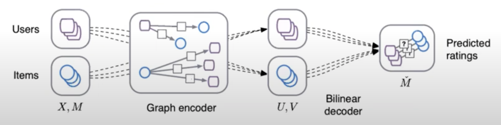
- In GNN-based recommender systems, generating embeddings refers to the process of representing the user and item nodes in the graph as low-dimensional feature vectors that capture the relevant information about the node and its connections to other nodes in the graph. This is generally achieved through neural message passing.
- Finally, the prediction of preferences is done via using cosine similarity.
Key terms
- Let’s start with learning the nomenclature associated with GNNs:
- Homogeneous Graphs: This graph type has all the nodes and edges be of the same type. An example is a social network, where all the users are nodes and the edges are their friendships.
- Heterogeneous Graphs: In contrast, this graph type has all the nodes and edges of different types with different representation of entities and relationships. An example is a recommendation system where users, movies, and genres are the entities, the graph would be considered heterogeneous because the nodes represent different types of objects (users, movies, genres) and the edges represent different types of relationships (user-movie interactions, movie-genre associations).
- Node Embeddings: Node embeddings are low-dimensional vector representations that capture the structural and relational information of nodes in a graph. GNNs are designed to learn these embeddings by iteratively aggregating information from neighboring nodes.
- Message Passing: Message passing is a fundamental operation in GNNs where nodes exchange information with their neighbors. During message passing, each node aggregates the information from its neighbors to update its own representation.
- Aggregation Functions: Aggregation functions are used in GNNs to combine information from neighboring nodes. Common aggregation functions include summation, averaging, and max-pooling, among others. These functions determine how information is aggregated and propagated through the graph.
- Graph Convolutional Networks (GCNs): GCNs are a popular type of GNN architecture that perform convolutional operations on graph-structured data. They adapt the concept of convolutions from traditional neural networks to the graph domain, enabling information propagation and feature extraction across the graph.
- GraphSAGE: GraphSAGE (Graph Sample and Aggregation) is a GNN model that uses sampling techniques to efficiently learn node embeddings. It aggregates information from sampled neighborhood nodes to update a node’s representation. GraphSAGE is commonly used in large-scale graph applications.
- Graph Attention Networks (GATs): GATs are GNN models that incorporate attention mechanisms. They assign attention weights to the neighboring nodes during message passing, allowing the model to focus on more relevant nodes and relationships.
- Link Prediction: Link prediction is a task in GNNs that aims to predict the presence or absence of edges between nodes in a graph. GNNs can learn to model the likelihood of missing or future connections based on the graph’s structure and node features.
- Graph Pooling: Graph pooling refers to the process of aggregating or downsampling nodes and edges in a graph to create a coarser representation. Pooling is often used in GNNs to handle graphs of varying sizes and reduce computational complexity.
- Graph Classification: Graph classification involves assigning a label or category to an entire graph. GNNs can be trained to perform graph-level predictions by aggregating information from the nodes and edges in the graph.
- Semi-Supervised Learning: GNNs often operate in a semi-supervised learning setting, where only a subset of nodes have labeled data. GNNs can leverage both labeled and unlabeled data to propagate information and make predictions on unlabeled nodes or graphs.
Popular GNN Architectures for RecSys
Graph Convolutional Networks
-
Graph Convolutional Networks (GCNs) are a type of neural network designed to work directly with graph-structured data. In the context of recommender systems, GCNs are particularly useful for several reasons:
-
Handling Sparse Data: Recommender systems often deal with sparse user-item interaction data. GCNs are adept at handling such sparse data by leveraging the graph structure.
-
Capturing Complex Relationships: GCNs can capture complex and non-linear relationships between users and items. In a typical recommender system graph, nodes represent users and items, and edges represent interactions (like ratings or purchases). GCNs can effectively learn these relationships.
-
Incorporating Side Information: GCNs can easily incorporate additional information (like user demographics or item descriptions) into the graph structure, providing a more holistic view of the user-item interactions.
-
Training GCNs
-
GCNs are trained in a manner similar to other neural networks, but with some key differences:
-
Graph Structure Processing: During training, GCNs use the adjacency matrix of the graph (which represents connections between nodes) along with node features (like user profiles or item attributes) to learn.
-
Layer-wise Propagation: GCNs use a layer-wise propagation rule to aggregate and transform feature information from a node’s neighbors. This aggregation is often followed by non-linear activation functions.
-
Backpropagation: Similar to other neural networks, GCNs use backpropagation to update the weights. However, the gradient calculations take into account the graph structure.
-
Unique Characteristics
-
GCNs stand out from other graph-based recommender systems due to:
-
Neighbor Aggregation: GCNs aggregate information from a node’s local neighborhood in each layer, effectively capturing the local graph structure around each node.
-
Deeper Insights from Graph Topology: GCNs can leverage deeper layers to gather more global information from the graph, as opposed to simpler models that might only consider direct connections.
-
Efficiency in Learning from Graph-structured Data: GCNs are designed specifically for graph-structured data, making them more efficient and effective at learning from such data compared to models that are adapted to handle graphs but are not inherently designed for them.
-
-
Overall, GCNs provide a powerful framework for building recommender systems that can harness the rich relational information inherent in user-item interaction data. Their ability to learn from both the graph structure and node features makes them a popular choice in modern recommender systems.
Graph Attention Networks
- Graph Attention Networks (GATs) are a type of neural network designed to operate on graph-structured data. They are particularly noteworthy for how they incorporate the attention mechanism, a concept widely used in fields like natural language processing, into graph neural networks. Here’s a detailed explanation of GATs and their application in recommender systems:
What are GATs?
-
Graph-based Framework: GATs are built for data represented in graph form. In a graph, data points (nodes) are connected by edges, which may represent various kinds of relationships or interactions.
-
Attention Mechanism: The key feature of GATs is the use of the attention mechanism to weigh the importance of nodes in a graph. This mechanism allows the model to focus more on certain nodes than others when processing the information, which is crucial for capturing the complexities of graph-structured data.
GATs in Recommender Systems
-
Handling Complex Relationships: In recommender systems, GATs can effectively manage complex and non-linear interrelationships between users and items. For example, in a movie recommendation system, GATs can better understand nuanced user preferences and complex relationships between different movies.
-
Personalized Recommendations: By focusing on different parts of the graph for different users, GATs can provide more personalized recommendations compared to traditional methods.
Training GATs
-
Supervised Learning: GATs are typically trained in a supervised manner, using a set of known node features and connections to learn the patterns in the graph.
-
Backpropagation: Like other neural networks, GATs use backpropagation for training. The network adjusts its weights based on the errors in its predictions.
-
Attention Weights: During training, GATs learn to assign appropriate attention weights to the edges in the graph, reflecting the importance of each connection.
Unique Characteristics
-
GATs stand out from other graph-based recommender systems due to:
-
Dynamic Attention: Unlike other graph neural networks that treat all connections equally or based on static rules, GATs dynamically assign importance to nodes and edges, which can adapt to different parts of the graph.
-
Flexibility: GATs are inherently more flexible and can be applied to a wide range of graph types, including those with complex or irregular structures.
-
Efficiency in Learning Representations: Due to their attention mechanism, GATs can be more efficient in learning node representations, especially in large and complex graphs.
-
Handling Heterogeneous Data: GATs are particularly effective in dealing with heterogeneous data (where different types of nodes and edges exist), a common scenario in recommender systems.
-
-
In summary, GATs stand out in the realm of graph-based recommender systems due to their ability to dynamically understand and interpret complex relationships in the data, offering more accurate and personalized recommendations. Their unique attention-based approach sets them apart from other graph-based architectures.
GraphSAGE
- GraphSAGE (Graph Sample and AggregatE) is a Graph Neural Network (GNN) model introduced by Hamilton et al. in their paper “Inductive Representation Learning on Large Graphs”. It is designed to generate node representations in a scalable way by incorporating information from a node’s entire neighborhood.
Overview of GraphSAGE
-
Scalable Neighborhood Incorporation: The core challenge addressed by GraphSAGE is to integrate information from a node’s entire neighborhood in a scalable manner. It achieves this through an innovative approach of sampling and aggregating features from a node’s local neighborhood.
-
Message-Passing Aggregation: In this model, each node aggregates feature information from its immediate neighbors through a message-passing mechanism. Nodes gather features from their neighbors and perform a pooling operation (like mean or max pooling) to aggregate these features. This aggregated information is then used to update the node’s own representation. This process is iteratively conducted across multiple layers, allowing nodes to integrate information from various distances within the graph.
-
Local and Global Graph Information: GraphSAGE utilizes these sampled and aggregated representations to learn node embeddings that encapsulate both local neighborhood and wider graph context, making these embeddings rich and informative for various applications.
GraphSAGE in Recommender Systems
-
GraphSAGE’s application in recommender systems leverages its unique capabilities:
-
Personalized Recommendations: By learning embeddings that reflect user and item characteristics within the graph, GraphSAGE facilitates personalized recommendation generation.
-
Handling Cold Start Problem: Its inductive learning nature allows it to generate embeddings for new users or items, effectively addressing the cold start challenge in recommender systems.
-
Adaptability to Dynamic Systems: The model’s ability to adapt to new users or items continuously makes it ideal for evolving recommender systems.
-
Training Process
-
Training GraphSAGE involves:
-
Neighborhood Sampling: Selecting a subset of neighbors for computational efficiency.
-
Feature Aggregation: Utilizing the pooling operations to aggregate features from the sampled neighborhood to form node embeddings.
-
Loss Function: Implementing a task-specific loss function for effective learning.
-
Backpropagation: Employing gradient descent to refine the model parameters.
-
Unique Characteristics
-
GraphSAGE’s distinct features compared to other graph-based recommender architectures include:
-
Inductive Learning: It can generalize to unseen nodes, a significant advantage over transductive models.
-
Scalability: Its sampling technique renders it more scalable for large graphs.
-
Aggregation Function Flexibility: The model supports various aggregation functions, enhancing its ability to model complex node relationships.
-
Dynamic Graph Adaptability: GraphSAGE’s design accommodates dynamic changes in the graph, crucial for real-time recommender systems.
-
-
GraphSAGE’s method of integrating local and global graph information through a scalable, message-passing aggregation process makes it a powerful tool in the realm of recommender systems, distinguishing it from other graph-based approaches.
Edge GNNs
- Originally proposed in Exploiting Edge Features for Graph Neural Networks by Gong and Cheng from the University of Kentucky in CVPR 2019, Enhanced Graph Neural Network (EGNN) (or Edge GNN or Edge GraphSAGE) refers to an extension of the GraphSAGE model that incorporates information from both nodes and edges in the graph. While the original GraphSAGE focuses on aggregating information from neighboring nodes, Edge GNN takes into account the structural relationships between nodes provided by the edges. In the context of recommender systems, here’s how they function and stand out:
Overview of Edge GNNs
- Edge GNNs, also known as Enhanced Graph Neural Network (EGNN) or Edge GraphSAGE, extends the GraphSAGE model to incorporate both node and edge information in graphs. This model was initially proposed in the paper “Exploiting Edge Features for Graph Neural Networks” by Gong and Cheng from the University of Kentucky at CVPR 2019. It focuses on not just the nodes but significantly on the structural relationships between nodes provided by the edges.
Edge GNNs in Recommender Systems
- Edge GNNs enhance recommender systems by considering both the features of neighboring nodes and the connecting edges. This dual focus allows the model to capture more detailed information about node relationships, like the type or strength of connections. Such comprehensive modeling leads to more accurate and personalized recommendations, as the system understands both node-level and edge-level interactions.
Training Process
- Training involves an iterative message-passing framework similar to GraphSAGE, where nodes gather and aggregate information from both neighboring nodes and edges. This process helps the network learn comprehensive representations, capturing both semantic and structural information from the local and global neighborhoods in the graph.
Unique Characteristics
- Edge GNNs’s distinct features compared to other graph-based recommender architectures include:
- Rich Interaction Modeling: Edge GNNs, by incorporating edge features, model interactions more richly, capturing the nuances of relationships better.
- Expressive Representations: The integration of both node and edge features allows Edge GNNs to learn more expressive representations, detailing both node-level and edge-level information.
- Semantic and Structural Insights: The model’s capability to aggregate information from nodes and edges provides insights into both semantic and structural aspects of the graph.
- Adaptability to Complex Graph Structures: Given their focus on edge features, Edge GNNs adeptly handle complex graph structures where the nature and dynamics of connections are as vital as the entities themselves.
- Overall, Edge GNNs represent a significant evolution in graph neural networks, offering nuanced and comprehensive ways to model complex relationships in graphs, making them especially suitable for advanced recommender systems.
Embedding Generation: Neural Message Passing
- Generating embeddings in GNN is typically achieved through information propagation, also known as neural message passing, which involves passing information between neighboring nodes in the graph in a recursive manner, and updating the node representations based on the aggregated information.
- The propagation process allows the embeddings to capture both local and global information about the nodes, and to incorporate the contextual information from their neighbors.
- By generating informative and expressive embeddings, GNN-based recommenders can effectively capture the complex user-item interactions and item-item relations, and make accurate and relevant recommendations.
- Neural message passing is a key technique for generating embeddings in GNN-based recommender systems. It allows the nodes in the graph to communicate with each other by passing messages along the edges, and updates their embeddings based on the aggregated information.
- At a high level, the message passing process consists of two steps:
- Message computation: In this step, each node sends a message to its neighboring nodes, which is typically computed as a function of the node’s own embedding and the embeddings of its neighbors. The message function can be a simple linear transformation, or a more complex non-linear function such as a neural network.
- Message aggregation: In this step, each node collects the messages from its neighbors and aggregates them to obtain a new representation of itself. The aggregation function can also be a simple sum or mean, or a more complex function such as a max-pooling or attention mechanism.
- The message passing process is usually performed recursively for a fixed number of iterations, allowing the nodes to exchange information with their neighbors and update their embeddings accordingly. The resulting embeddings capture the local and global information about the nodes, as well as the contextual information from their neighbors, which is useful for making accurate and relevant recommendations.
- Some common algorithms and techniques used for neural message passing in GNNs are:
- Graph Convolutional Networks (GCNs): GCNs apply a localized convolution operation to each node in the graph, taking into account the features of its neighboring nodes. This allows for the aggregation of information from neighboring nodes to update the node’s feature representation.
- Graph Attention Networks (GATs): GATs use a learnable attention mechanism to weigh the importance of neighboring nodes when updating a node’s feature representation. This allows the model to selectively focus on the most relevant neighbors.
- GraphSAGE: GraphSAGE uses a hierarchical sampling scheme to aggregate information from the neighborhood of each node. This allows for efficient computation of node embeddings for large graphs.
- Message Passing Neural Networks (MPNNs): MPNNs use a general framework for message passing between nodes in a graph, allowing for flexibility in modeling different types of interactions.
- In the context of GNNs for recommender systems, the goal is to generate embeddings for the user and item nodes in the graph. The embeddings can then be used for tasks such as candidate generation, scoring, and ranking.
- The process of generating embeddings involves multiple GNN layers, each of which performs an exchange of information between the immediate neighbors in the graph. At each layer, the information exchanged is aggregated and processed to generate new embeddings for each node. This process can be repeated for as many layers as desired, and the number of layers determines how far information is propagated in the graph.
- For example, in a 2-layer GNN model, each node will receive information from its immediate neighbors (i.e., nodes connected by an edge) and its immediate neighbors’ neighbors. This allows information to be propagated beyond a node’s direct neighbors, potentially capturing higher-level structural relationships in the graph.
- From Building a Recommender System Using Graph Neural Networks, here is the pseudo-code for generating embeddings for a given node:
- Fetch incoming messages from all neighbors.
- Reduce all those messages into 1 message by doing mean aggregation.
- Matrix multiplication of the neighborhood message with a learnable weight matrix.
- Matrix multiplication of the initial node message with a learnable weight matrix.
- Sum up the results from steps 3 and 4.
- Pass the sum through a ReLU activation function to model non-linearity relationships in the data.
- Repeat for as many layers as desired. The result is the output of the last layer.
- The image below (source), visually represents this pseudo code.
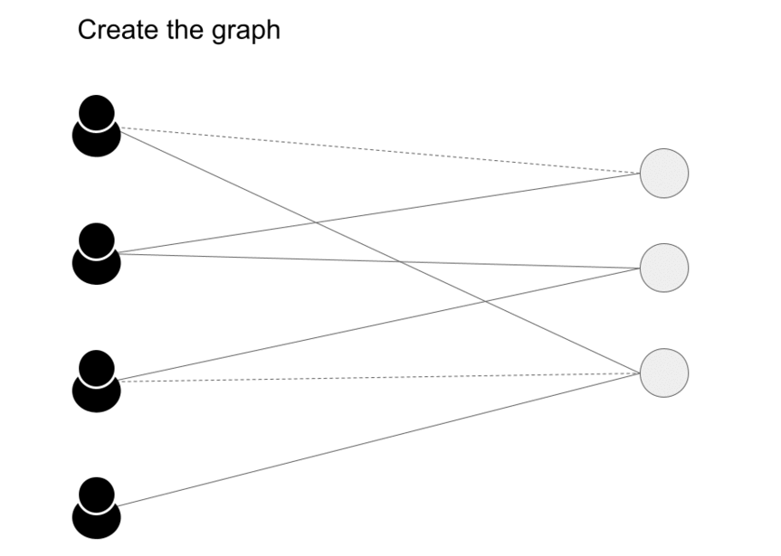
- Message passing has two steps, Aggregation and Update as we can see in the image (source) below.
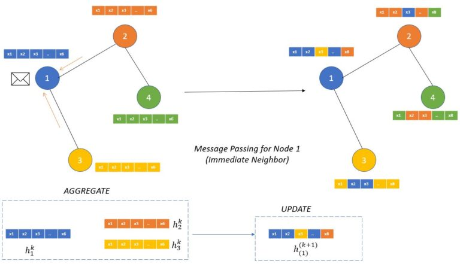
- The aggregation function works on defining how the messages from the neighboring nodes are combined to compute new representations of the node.
- “This aggregate function should be a permutation invariant function like sum or average. The update function itself can be a neural network (with attention or without attention mechanism) which will generate the updated node embeddings.” (source)
Benefits of GNNs in RecSys
- Incorporating Graph Structure: GNNs are designed to process data with inherent graph structure, which is particularly useful in recommender systems. Recommender systems often involve modeling relationships between users, items, and their interactions. GNNs can effectively capture these complex relationships and dependencies by leveraging the graph structure, leading to more accurate and personalized recommendations.
- Implicit Collaborative Filtering: Collaborative filtering is a popular recommendation technique that relies on user-item interactions. GNNs can handle implicit feedback data, such as user clicks, views, or purchase history, without the need for explicit ratings. GNNs can learn from the graph connections and propagate information across users and items, enabling collaborative filtering in a more efficient and scalable manner.
- Modeling User and Item Features: GNNs can handle heterogeneous data by incorporating user and item features alongside the graph structure. In recommender systems, users and items often have associated attributes or contextual information that can influence the recommendations. GNNs can effectively integrate these features into the learning process, allowing for more personalized recommendations that consider both user preferences and item characteristics.
- Capturing Higher-Order Dependencies: GNNs can capture higher-order dependencies by aggregating information from neighboring nodes in multiple hops. This allows GNNs to capture complex patterns and relationships that may not be easily captured by traditional recommendation algorithms. GNNs can discover latent factors and capture long-range dependencies, resulting in improved recommendation quality.
- Cold Start Problem: GNNs can help address the cold start problem, which occurs when there is limited or no historical data for new users or items. By leveraging the graph structure and user/item features, GNNs can generalize from existing data and make reasonable recommendations even for users or items with limited interactions.
- Interpretability: GNNs provide interpretability by allowing inspection of the learned representations and the influence of different nodes or edges in the graph. This can help understand the reasoning behind recommendations and provide transparency to users, increasing their trust in the system.
Loss functions
Overview
- GNNs use various loss functions like Binary Cross-Entropy, Categorical Cross-Entropy, Mean Squared Error, Pairwise Ranking, Triplet Ranking, and Graph Reconstruction Loss to handle diverse tasks such as binary and multi-class classification, regression, ranking, and graph reconstruction. Specifics below:
- Binary Cross-Entropy Loss: Binary cross-entropy loss is often used for binary classification tasks in GNNs. It is suitable when the task involves predicting a binary label or making a binary decision based on the graph structure and node features.
- Categorical Cross-Entropy Loss: Categorical cross-entropy loss is used for multi-class classification tasks in GNNs. If the GNN is trained to predict the class label of nodes or edges in a graph, this loss function is commonly employed.
- Mean Squared Error (MSE) Loss: MSE loss is frequently used for regression tasks in GNNs. If the goal is to predict a continuous or numerical value associated with nodes or edges in the graph, MSE loss can measure the difference between predicted and true values.
- Pairwise Ranking Loss: Pairwise ranking loss is suitable for recommendation or ranking tasks in GNNs. It is used when the goal is to learn to rank items or nodes based on their relevance or preference to users. Examples of pairwise ranking loss functions include the hinge loss and the pairwise logistic loss.
- Triplet Ranking Loss: Triplet ranking loss is another type of loss function used for ranking tasks in GNNs. It aims to learn representations that satisfy certain constraints among a triplet of samples. The loss encourages the model to assign higher rankings to relevant items compared to irrelevant items.
- Graph Reconstruction Loss: Graph reconstruction loss is employed when the goal is to reconstruct the input graph or its properties using the GNN. This loss compares the reconstructed graph with the original graph to measure the similarity or reconstruction error.
Tasks \(\rightarrow\) Loss Functions
- As mentioned earlier, several loss functions are used in GNNs, depending on the task at hand such as node classification, graph classification, and link prediction.
Node Classification
- For node classification tasks, Cross-Entropy loss is commonly used, especially when the classes are exclusive. \(L = -\sum_{i=1}^{N} y_i \log(\hat{y}_i)\)
- Where:
- \(N\) is the number of nodes.
- \(y_i\) is the true label of node \(i\).
- \(\hat{y}_i\) is the predicted label of node \(i\).
Graph Classification
- For graph classification tasks, Cross-Entropy or Mean Squared Error (MSE) loss can be used, depending on whether the task is a classification or a regression task, respectively.
- Cross-Entropy Loss: \(L = -\sum_{i=1}^{N} y_i \log(\hat{y}_i)\)
- Mean Squared Error Loss: \(L = \frac{1}{N} \sum_{i=1}^{N} (y_i - \hat{y}_i)^2\)
Link Prediction
- For link prediction tasks, the Binary Cross-Entropy loss is often used, as the task is usually to predict whether a link exists (1) or not (0) between two nodes. \(L = -\frac{1}{N} \sum_{i=1}^{N} [y_i \log(\hat{y}_i) + (1 - y_i) \log(1 - \hat{y}_i)]\)
Graph Generation
- When generating graphs, the Negative Log Likelihood (NLL) loss is often used to maximize the likelihood of generating real graphs.
Graph Reconstruction
- For graph reconstruction tasks, reconstruction loss such as Mean Squared Error between the adjacency matrices of the original and reconstructed graphs can be used. \(L = \frac{1}{N^2} \sum_{i=1}^{N} \sum_{j=1}^{N} (A_{ij} - \hat{A}_{ij})^2\)
- Where:
- \(A_{ij}\) is the original adjacency matrix.
- \(\hat{A}_{ij}\) is the reconstructed adjacency matrix.
Regularization Loss
- Regularization terms like L1 or L2 regularization are also often added to the loss function to avoid overfitting.
- L1 Regularization: \(L_{\text{reg}} = \lambda \sum_{i} |w_i|\)
- L2 Regularization: \(L_{\text{reg}} = \lambda \sum_{i} w_i^2\)
Additional Considerations
- The choice of a loss function also depends on the kind of graph involved (directed, undirected, weighted, etc.) and the specific requirements of the task.
- The above loss functions might be combined or modified based on the specific needs of the task, and some tasks might require designing a custom loss function.
Walkthrough
- Now, let’s do a quick walkthrough on creating our own system from scratch and see all the steps that it would take.
- First is the dataset, say we have user-item interaction, item features and user features available as shown below starting with user-item interaction. (source) 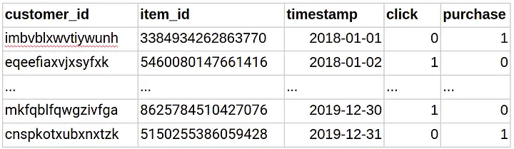
- Below we see item features (source) 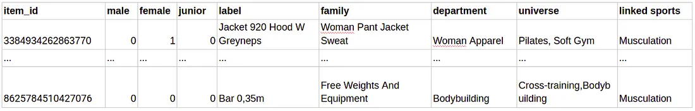
-
Below are the user features (source) 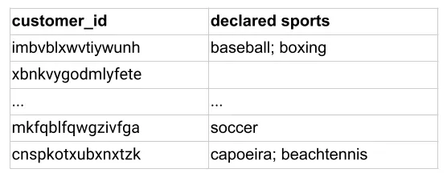
-
The next step is to create a graph as shown below (source) 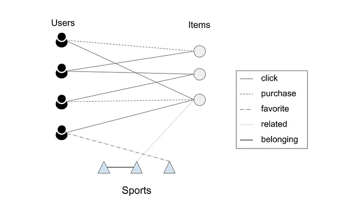
- The embeddings are created using the procedure elaborated in Embedding Generation: Neural Message Passing. The embeddings generated by GNNs are utilized to estimate the likelihood of a connection between two nodes. To calculate the probability of interaction between a user \(u\) and an item \(v\), we use the cosine similarity function. After computing scores for all items that a user did not interact with, the system recommends the items with the highest scores.
- The main goal during training of the model is to optimize the trainable matrices (\(W\)) used for generating the embeddings. To achieve this, a max-margin loss function is used, which involves negative sampling. The training data set only includes edges representing click and purchase events.
- The model is trained in such a way that it learns to predict a higher score for a positive edge (an edge between a user and an item that they actually interacted with) compared to randomly sampled negative edges. These negative edges are connections between a user and random items that they did not interact with. The idea is to teach the model to distinguish between actual positive interactions and randomly generated negative interactions.
Seasonality
- Seasonality in recommender systems refers to the variation in user preferences and item popularity over time. For example, certain items may be more popular during a particular season or event, such as Christmas or the summer months. This can cause issues for recommender systems that are not able to adapt to changing user preferences and item popularity over time.
- To overcome seasonality in a music or movie app, one approach is to incorporate time-based features into the recommender system. For example, the recommender system can take into account the time of year or the day of the week when making recommendations. Additionally, the system can use algorithms that can adapt to changing user preferences over time, such as collaborative filtering with temporal dynamics or matrix factorization with time-dependent factors.
- Another approach is to use contextual information to inform recommendations. For example, the recommender system can take into account a user’s location or weather conditions to make more relevant recommendations. This can be especially useful for music or movie apps where the content can be influenced by the user’s environment.
Summary
- Graph Neural Networks (GNN) architectures utilize graph structures to capture relationships between users, items, and their interactions. GNNs propagate information through the user-item interaction graph, enabling the model to learn user and item representations that incorporate relational dependencies. This is particularly useful in scenarios with rich graph-based data.
- Pros: Captures relational dependencies and propagates information through graph structures, enabling better modeling of complex relationships.
- Cons: Requires graph-based data and potentially higher computational resources for training and inference.
- Advantages: Improved recommendations by incorporating the rich relational information among users, items, and their interactions.
- Example Use Case: Social recommendation systems, where user-user connections or item-item relationships play a significant role in personalized recommendations.
- Phase: Candidate Generation, Ranking, Retrieval.
- Recommendation Workflow: GNN architectures are suitable for multiple phases of the recommendation workflow. In the candidate generation phase, GNNs can leverage graph structures to capture relational dependencies and generate potential candidate items. In the ranking phase, GNNs can learn user and item embeddings that incorporate relational information, leading to improved ranking. In the retrieval phase, GNNs can assist in efficient retrieval of relevant items based on their graph-based representations.
- Pros: Captures relational dependencies and propagates information through graph structures, enabling better modeling of complex relationships.
Case Studies
- Below, we will review research from various companies to see how they leverage GNNs for their recommender system tasks.
Snap
Graph Neural Networks for Friend Ranking in Large-scale Social Platforms
- In this research, the authors propose the use of Graph Neural Networks (GNNs) for friend suggestion in large-scale social platforms. They address challenges specific to this task, such as heavy-tailed degree distributions and limited information about inactive users. The proposed GNN architecture, called GraFRank, takes into account multi-modal user features and link communication features to learn expressive user representations.
- Graph Attention Friend Ranker (GraFRank) leverages in-platform actions, such as messages, likes, and other interactions, to capture rich information about user behavior and preferences. By incorporating these actions into the model, GraFRank can generate meaningful user representations. Put simply, GraFRank for friend ranking in a dynamic friendship graph focuses on learning user representations based on pairwise link features and time-sensitive multi-modal node features.
- The authors begins with an empirical analysis of user feature modalities to understand the factors influencing friendship formation. They measure modality homophily, which is the tendency of users in a social graph to associate with others who are similar to them along attributes of a certain modality. They observe varying extents of attribute homophily across modalities, with higher variance for time-sensitive modalities.
- Next, they analyze the correlation between different feature modalities in terms of induced clusterings of ego-networks. They find substantial correlations across certain modalities, indicating that friends who exhibit homophily in one modality are often correlated with friends who exhibit homophily in other modalities.
- Based on these observations, the authors propose GraFRank, which consists of two modules: modality-specific neighbor aggregation and cross-modality attention layer. The modality-specific neighbor aggregation module treats each modality individually to account for the varying extent of induced homophily. They use a message-passing mechanism with friendship attention to aggregate information from the ego-network of each user.
- The cross-modality attention layer takes into account the correlations between different feature modalities. They use normalized mutual information (NMI) and adjusted Rand Index (ARI) to evaluate the consensus between the clusterings induced by different modalities. They find substantial correlations between certain pairs of modalities.
- GraFRank is a multi-faceted friend ranking model that considers the heterogeneity in modality homophily and the correlations between feature modalities. It leverages modality-specific neighbor aggregation and cross-modality attention to learn user representations in a dynamic friendship graph.
- The authors propose a friend ranking approach that incorporates multi-modal user features and link communication features. They introduce a neural architecture called GraFRank, which addresses heterogeneity in modality homophily through modality-specific neighbor aggregators and captures non-linear modality correlations using cross-modality attention. The experiments conducted on two multi-million user datasets from Snapchat demonstrate significant improvements in friend candidate retrieval and ranking, particularly for less-active and low-degree users. The authors suggest that GraFRank can be applied to other bidirectional friending platforms like Facebook and LinkedIn with some adaptations for unidirectional scenarios like Twitter and Instagram.
- The authors evaluate GraFRank on Snapchat datasets and compare its performance against existing methods in candidate retrieval and ranking tasks. The experimental results demonstrate that GraFRank outperforms the baseline methods, achieving significant improvements in Mean Reciprocal Rank (MRR) for both candidate retrieval and ranking tasks.
- Interestingly, GraFRank shows particularly strong performance for less-active and low-degree users, indicating its effectiveness in suggesting friends for these critical user populations.
- The research highlights the importance of learning latent user representations in user understanding, which is widely applicable in various industrial settings. While Graph Neural Networks have been successful in tasks like link prediction, community detection, and recommender systems, their application in friend suggestion within large-scale social platforms has been underexplored.
- Friend suggestion is crucial for social networking platforms as it promotes user retention and engagement. Previous efforts in this area have mainly focused on link prediction and graph-based heuristics. However, GNN models have the potential to capture the social influence from friends and learn expressive user representations.
- The authors address the challenges posed by heavy-tailed degree distributions and activity sparsity by leveraging rich knowledge from heterogeneous in-platform actions. They formulate friend suggestion as a multi-faceted friend ranking problem on an evolving friendship graph.
- Users are represented using multiple modalities of features, and pairwise link features are utilized to capture communication activities between users. The authors analyze the diverse homophily distributions across feature modalities, which leads to the design of the GraFRank architecture.
- GraFRank learns user representations through modality-specific neighbor aggregation and cross-modality attention mechanisms. This enables the model to capture the influence of individual features and pairwise communications in friend suggestion.
- The contributions of this work include introducing graph neural friend ranking, designing the GraFRank model for multi-faceted user representations, and demonstrating robust experimental results on large-scale datasets from Snapchat. GraFRank consistently outperforms state-of-the-art baselines in friend candidate retrieval and ranking tasks, with notable gains observed for less-active and low-degree users.
- To represent the friendship graph, a continuous-time dynamic graph (CTDG) approach is adopted. Each friendship link between users is assigned a unique timestamp, indicating the time of its creation. A function maps each timestamp to a corresponding snapshot, allowing the division of the observation time window into a sequence of daily snapshots.
- User features are crucial for friend suggestion, and they are categorized into four modalities: profile attributes, content interests, friending activity, and engagement activity. Profile attributes encompass static demographic information about the user. Content interests capture the textual content (e.g., posts, stories) that the user interacts with on the platform. Friending activity involves the user’s actions related to adding friends, such as sent/received friend requests and viewed suggestions. Engagement activity measures the user’s interactions with other friends, including messages, comments, and likes.
- The user features can be a combination of static and time-sensitive attributes. Profile attributes tend to be static, while the other modalities are time-sensitive and evolve at different scales among users. For example, long-time active users may have stable sets of friends they frequently communicate with, while new users are more likely to rapidly add new friends before engaging with them.
- Pairwise link communication features capture the communication channels within the social network. Conversations represent direct user-to-user communications, such as text messages and media exchanges. Social actions, on the other hand, involve indirect interactions, such as broadcasting posts or liking content. Bidirectional link features are extracted to reflect the number of communications exchanged between friends, and link features per snapshot are aggregated based on different time intervals.
- The problem of multi-faceted friend ranking aims to leverage the multi-modal user features, link features, and the friendship graph to generate user representations. These representations, denoted as h𝑣(𝑡) for each user 𝑣 at time 𝑡, should facilitate friend suggestion tasks, including candidate retrieval and re-ranking. The objective is to effectively recommend potential friends to users based on their diverse features and network interactions.
Embedding Based Retrieval in Friend Recommendation
- Friend recommendation systems in online social and professional networks aim to help users find friends and improve user engagement and retention.
- Traditional friend recommendation systems, like Friends-of-Friends (FoF), rely on graph traversal and locality principle but have limitations:
- Limited reach in cold-start scenarios.
- Expensive and infeasible for real-time requests beyond 1 or 2 hops due to latency constraints.
- Inability to capture graph topology and connection strengths effectively, requiring alternative ranking mechanisms for top-K candidates.
- The paper proposes an Embedding Based Retrieval (EBR) system as a solution:
- EBR complements FoF retrieval by retrieving candidates beyond the 2-hop range.
- EBR provides a natural way to rank FoF candidates.
- Online A/B tests demonstrate statistically significant improvements in the number of friendships made when EBR is used as an additional retrieval source.
- Contributions of the paper:
- Deployment of a novel retrieval system in a large-scale friend recommendation system at Snapchat.
- Generation of embeddings for billions of users using Graph Neural Networks.
- Development of EBR infrastructure at Snapchat to support the system at scale.
- The image below (source) depicts the high level architecture of friend recommendation.
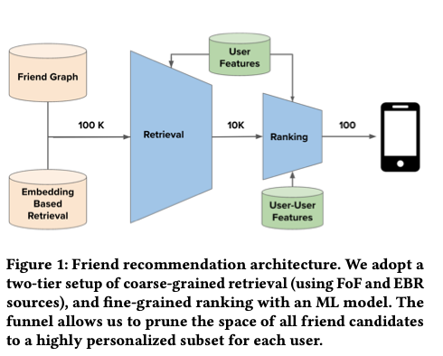
-
As this paper notes, a users friends are critical for one’s engagement and retention on the app.
- Overview:
- The friend recommendation system consists of a retrieval phase and a ranking phase.
- The retrieval phase aims to maximize recall by including as many potential friends as possible for further consideration.
- Recall is a measure of effectiveness, calculated as the ratio of relevant candidates retrieved to the total number of relevant candidates.
- In the ranking phase, a deep neural network machine learning (ML) model is used to rank the retrieved candidates.
- The ML model is trained on historical friend recommendation outcomes and considers user-level and user-to-user interaction features as signals for ranking.
- The goal of the ranking phase is to maximize precision, which measures the fraction of candidates surfaced to users that they find relevant and worth sending friend requests to.
- The top-\(K\) friend recommendations, where \(K\) is typically in the hundreds, are then sent to the end users for their consideration.
- Embedding based retrieval:
- Retrieval in friend recommendation systems based on homogeneous graphs presents unique challenges compared to other recommendation systems.
- Traditional graph traversal approaches, such as Friends-of-Friends (FoF), are commonly used in social and professional networks like LinkedIn and Facebook.
- However, FoF has limitations: it struggles in cold-start scenarios with low-density networks, it becomes computationally expensive to go beyond 2-hop connections, and it doesn’t capture graph topology or connection strength effectively.
- To overcome these challenges, a new retrieval system called Embedding Based Retrieval (EBR) is proposed.
- EBR is widely used in content and product recommendation systems and leverages low-dimensional embeddings of nodes in large graphs.
- In EBR, embeddings are generated for each user by learning from rich information about users and their friend connections.
- During online retrieval, candidates closest to the target user’s embedding in the embedding space are retrieved.
- EBR addresses the limitations of graph traversal by enabling efficient nearest-neighbor search in the embedding space and retrieving high-quality candidates regardless of their hop distance.
- Graph Neural Networks (GNNs) are used to generate user embeddings.
- Infrastructure optimizations are implemented to support EBR for friend recommendation at Snapchat scale in a cost-effective manner.
- Graph aware user embeddings:
- User embedding quality is crucial for the effectiveness of Embedding Based Retrieval (EBR) in friend recommendation systems.
- Graph Neural Networks (GNNs) are used to embed users in the Snapchat friend graph, leveraging their ability to learn rich representations over graph data.
- GNNs extend convolutions to graphs and can be trained for node-level, link-level, and graph-level tasks.
- The message passing paradigm is commonly used in GNN architectures, where nodes exchange messages over the graph topology to derive intermediate embeddings.
- In the EBR use case, a 2-layer GraphSAGE model is employed, with mean-pooling as the aggregation function and vector concatenation followed by a linear layer as the updating function.
- The model is trained using a transductive link prediction setup, where edges are split into training, validation, and test sets, and a max-margin ranking loss is used for supervision.
- Training GNNs at scale poses scalability challenges. The graph is preprocessed into a compressed sparse row (CSR) format, and node features are compactly serialized.
- Minibatch training is employed, using a producer-consumer shared-memory setup, where producers sample minibatches and put them on queues, and consumers train using GPUs.
- Large-scale training is performed using a Google Compute Engine VM with multiple CPUs, memory, and GPUs.
- Apache Airflow is used for daily user embedding generation for millions of Snapchat users, and the embeddings’ quality is closely monitored using offline ranking metrics.
- Approximate Nearest-Neighbor (ANN) search is used in EBR for candidate generation.
- To handle the large-scale operations of candidate generation on Snapchat’s massive friend graph, encoding the entire graph into a single index is not practical.
- Instead, Snapchat employs a cost-effective solution that leverages unique characteristics of their social graph.
- The index size is significantly reduced by indexing only active users, focusing on users who have been active on Snapchat in the last 90 days.
- Geographic proximity is exploited as a factor in the friend graph, as a majority of friend links are established between users who are geographically closer.
- The index is divided into segments based on geographic locations, such as North America, Europe, MENA, Asia, etc., to manage memory footprint.
- By directing queries to the geographic partition corresponding to the searcher’s location, query latency is kept low while still capturing the majority of friending activities.
-
These infrastructure optimizations result in a more scalable, robust, and cost-effective system, delivering significant business impact.
- Online A/B testing was conducted to evaluate the effectiveness of Embedding Based Retrieval (EBR) for friend recommendations on Snapchat.
- The control group consisted of candidates from existing retrieval algorithms, while the treatment group included candidates from EBR as an additional retrieval source.
- The success metric used was the number of friendships made from friend recommendations.
- The A/B tests ran for 4 weeks with a significance level (α) of 0.01.
- Statistically significant improvements were observed for the treatment group across all markets.
- The increase in the number of friendships made from friend recommendations ranged from 5% to 10% in different markets.
- EBR had a larger impact in markets with higher user growth.
- The overlap of top suggestions between EBR and existing retrieval algorithms was low, indicating that EBR serves as a good complement to the traditional methods.
- The quality of candidates from EBR, in terms of conversion rate and reciprocation rate, was comparable to candidates from existing algorithms.
- Future work includes improving the quality of user embeddings in Graph Neural Network (GNN) models, generating multiple embeddings to capture multiple social contexts, and further optimizing the EBR infrastructure through techniques like quantization and sharding strategies.
Friend Story Ranking with Edge-Contextual Local Graph Convolutions
- In this paper titled “Friend Story Ranking with Edge-Contextual Local Graph Convolutions,” the authors address the problem of ranking Friend Stories on social platforms, specifically focusing on the task of algorithmic Friend Story Ranking (FSR) with machine learning models. The study explores the use of graph representation learning and proposes an edge-contextual approach called ELR (Edge-Contextual Local Graph Convolutions) to rank Friend Stories based on factors such as local graph structure, edge types, directionality, and rich edge attributes.
- The authors highlight that while graph neural networks (GNNs) have shown promising results in graph learning tasks, their direct application to link ranking tasks, such as FSR, is limited. Furthermore, existing GNN frameworks often do not handle edge-level attributes, which are essential in capturing rich user-user interactions in social data.
- The proposed ELR method addresses these challenges by considering and attending to neighboring nodes, incorporating multiple edge types within local egonet structures, and leveraging graph convolutions. The authors validate ELR using two large country-level datasets from Snapchat, consisting of millions of users and tens of millions of links. The performance of ELR is compared to alternative methods, and it demonstrates superior results with approximately 8% and 5% error reduction measured by mean squared error (MSE) and mean absolute error (MAE), respectively.
- The paper also discusses the generality, data efficiency, and ablation experiments conducted to confirm the advantages of ELR. The authors emphasize the importance of edge-contextual approaches in handling link ranking tasks and highlight the potential of graph neural networks in large-scale social graph learning problems.
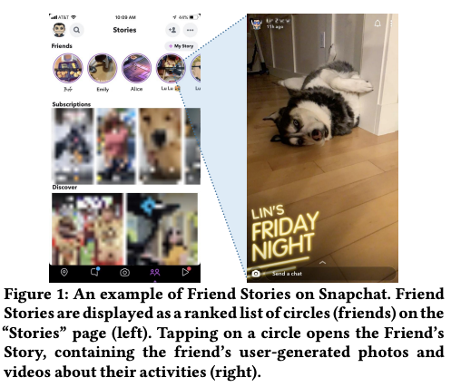
- The use of graph neural networks (GNNs) in the Friend Story Ranking (FSR) problem is discussed.
- The goal is to predict the affinity between two users for Friend Stories, considering their activities, interactions, and influence from their local communities.
- Multiple types of relationships (pairwise, intra-ego, and inter-ego) in the users’ egonets are differentiated, and self-attention over neighbors is used to improve learning over sparse user activity.
- Edge attributes play a crucial role in message passing during aggregation, contributing to the learning of rich representations for users, links, and relation types.
- The proposed framework, called ELR (Edge-contextual Local Graph Convolutions for Friend Story Ranking), utilizes local community information and neighbor attention to overcome interaction sparsity and enhance inference quality.
- ELR outperforms various baselines, including tabular and graph-aware approaches, in terms of error reduction across different datasets and metrics.
- The generality of ELR is demonstrated, showing its effectiveness on multiple FSR-related objectives.
- Ablation studies confirm the value of each component in ELR, and qualitative results highlight the importance of neighbor attention.
- The contributions of the work include studying the FSR problem using GNNs, proposing the ELR model, and demonstrating its performance on large-scale datasets from Snapchat.
-
ELR’s design can be extended to other link ranking problems, providing potential avenues for future research in the community.
- The approach, ELR, tackles the FSR problem by incorporating graph representation learning to leverage social information beyond the relation of interest.
- ELR consists of three modules: local graph encoding, friendship categorization, and affinity score prediction.
- The local graph encoding module utilizes a GNN-inspired neural network to learn representations for users and relations in the local community graph.
- The friendship categorization module differentiates three types of relations: pairwise relation, intra-ego relation, and inter-ego relation based on their relative locations and status in the local graph.
- The affinity score prediction module jointly utilizes the three types of relations to predict the affinity score between two users.
- The edge-contextual graph is introduced as an augmented input, expanding the perception from pairwise relations to contextual information in the social network.
- The edge-contextual graph is a subgraph based on the egonets of the source and target nodes, capturing local community structure.
- Node and edge features are constructed from historical user activities and user-user interactions, including edge features that characterize link behaviors.
- The edge-contextual graph is encoded using a GNN-based encoding scheme, specifically the GraphSAGE model, which learns representations for nodes and updates them based on information from neighbors.
- The mean aggregator is adapted to handle edge features by concatenating node representations with corresponding user-to-user features.
- User representations are captured using multiple Edge-GNN layers, considering first-order and second-order proximity.
- Link representations for specific links are constructed using pairwise edge features and associated user representations.
- Friendship relations are categorized into different types, and their representations are learned separately to capture the influence of different facets of the edge-contextual graph.
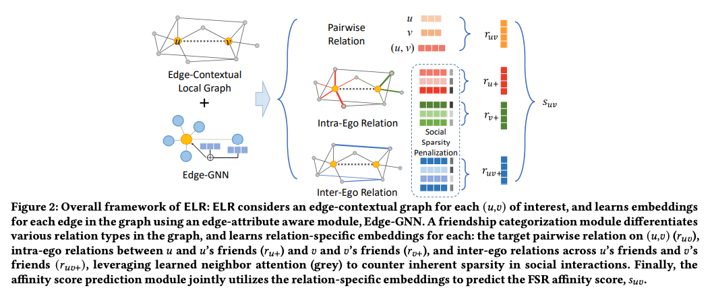
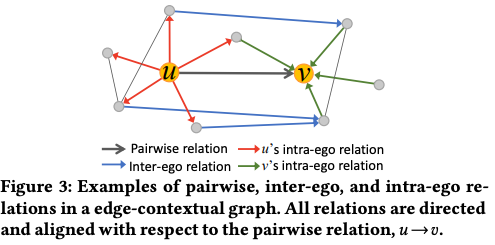
- In the context of predicting Friend Story affinity scores, the authors propose a categorization of friendship relations to capture the similarity of affinities between different pairs of users in an edge-contextual graph. The goal is to predict the likelihood of a user watching another user’s stories based on various relational factors.
- The first category of relation is the pairwise relation, which characterizes the direct engagement between two users (𝑢 and 𝑣) in terms of their activities and interactions. User representations (h𝑢, h𝑣) and a friendship representation (f𝑢𝑣) are concatenated and passed through a fully-connected neural network layer to learn the pairwise relation.
- The second category is the intra-ego relation, which considers the friendships of both users (𝑢 and 𝑣). The idea is that user behavior and interests are influenced by their friends due to shared communications and homophily. The intra-ego relation focuses on the immediate friends of 𝑢 and 𝑣. Aggregating the link representations between 𝑢 →N (𝑢) (edges from 𝑢 to 𝑢’s friends) and N (𝑣) →𝑣 (edges from 𝑣’s friends to 𝑣), aligned with the target edge (𝑢,𝑣), allows for the definition of the intra-ego relation representation of 𝑢. Mean aggregation is a simple approach, but it treats all friends equally. To account for the diversity of communication frequency and the closeness of friendships, a self-attention mechanism is used to assign different importance to friends within the intra-ego relations.
- The third category is the inter-ego relation, which considers the level of interest from 𝑢’s friends towards the stories of 𝑣’s friends. This category relies on properties of homophily and shared preferences between friends. By examining the interest of 𝑢’s friends in 𝑣’s friends’ stories, it can imply 𝑢’s interest in 𝑣’s stories. The inter-ego relation contributes to capturing the broader social structure and shared preferences among friends.
-
The proposed approach extends beyond traditional models that focus only on users’ historical activities and interactions. It incorporates local community information through the edge-contextual graph signals, capturing transitive properties and regularizing inferences based on social structure.
- Baselines used:
- Linear Regression (LR): Since the linear regression model cannot handle graph-structured data, they concatenate original node features x𝑢,x𝑣 and edge features e𝑢𝑣 as input to the model.
- XGBoost (XGB): They construct input similarly to LR, using a boosted trees model instead.
- Multi-LayerPerceptron(MLP): They build a two-layerMLPmodel, using the same input features to LR and XGB models.
- GraphSAGE (GS): They train a two-layer GraphSAGE model with mean aggregation on the entire network G to predict 𝑠𝑢𝑣 using an inner product decoder on final node embeddings. They only use node features with graph structure since does not use them.
- Edge-GraphSAGE (E-GS): The same as GS, but they replace the message-passing in the original GraphSAGE with Equation 2 so that edge features are incorporated explicitly in the aggregation.
- This work focuses on the Friend Story Ranking (FSR) problem, which involves ranking existing network links based on user-user relationships. The authors propose the ELR model, leveraging graph representation learning and socially-motivated intuitions. They emphasize the importance of edge attributes and different types of relations (pairwise, intra-ego, and inter-ego) in local graph structures, addressing the sparsity of social interactions. Extensive experiments demonstrate that ELR outperforms baselines, achieving an 8% reduction in error for Friend Story click-through rate (CTR) prediction.
- The study also explores the generality of ELR, the significance of modeling components, and provides qualitative insights.
Meta
Embedding-based Retrieval in Facebook Search
- Search in social networks like Facebook requires considering the searcher’s context, including their social graph.
- Facebook search historically relied on a Boolean matching model, but this paper explores the application of embedding-based retrieval (EBR) in the Facebook Search system.
- A unified embedding framework is developed to model semantic embeddings for personalized search.
- The system uses an inverted index for embedding-based retrieval in a typical search system.
- Various optimization techniques are discussed, including parameter tuning for approximate nearest neighbor (ANN) search and full-stack optimization.
- Progress is presented on two advanced topics related to modeling in the EBR system.
- EBR is evaluated on verticals (specific search categories) in Facebook Search, showing significant improvements in metrics through online A/B experiments.
- The paper aims to provide insights and experiences for developing embedding-based retrieval systems in search engines.
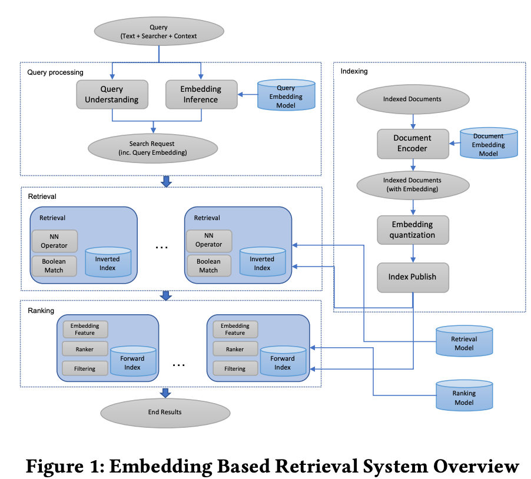
- ” Among them embedding, which is also called representation learning, has been proven to be successful techniques contributing to the success [2].
- In essence, embedding is a way to represent a sparse vector of ids as a dense feature vector, which is also called semantic embedding in that it can often learn the semantics. Once the embeddings are learned, it can be used as a representation of query and documents to apply in various stages of a search engine.”
- Embedding-based retrieval (EBR) is a technique used in search engines to represent queries and documents as embeddings and convert the retrieval problem into a nearest neighbor search problem in the embedding space.
- EBR poses unique challenges in large-scale search engines due to the massive amount of data to be processed and the need to combine embedding-based retrieval with term matching based retrieval.
- Facebook search faces additional challenges, as the search intent depends not only on query text but also on the user issuing the query and the context.
- Techniques are developed to address challenges in modeling, serving, and full-stack optimization of embedding-based retrieval in Facebook search.
- A unified embedding model is proposed, incorporating features from search logs and extracting information from searcher, query, context, and documents.
- Hard mining and ensemble embedding are explored as approaches to effectively represent and learn retrieval tasks.
- A hybrid retrieval framework is developed, integrating embedding KNN with Boolean matching to score documents for retrieval.
- Later-stage optimization is performed to incorporate embeddings into ranking layers and actively learn to identify good and bad results from embedding-based retrieval.
- The EBR system is evaluated on verticals in Facebook search, demonstrating significant improvements in metrics through online A/B experiments.
- The paper discusses modeling, system implementation, later-stage optimization, and advanced modeling techniques, providing insights and experiences for embedding-based retrieval systems in search engines.
- Inverted index based ANN (approximate near neighbor) search algorithms were deployed in the system for embedding-based retrieval.
- The advantages of using inverted index based ANN search include smaller storage cost and easier integration into the existing retrieval system.
- The Faiss library was used for quantizing embedding vectors and implementing efficient nearest neighbor search in the inverted table scanning system.
- Two major components of embedding quantization are coarse quantization and product quantization.
- Coarse quantization involves quantizing embedding vectors into coarse clusters using algorithms like IMI and IVF, and the number of coarse clusters (num_cluster) needs to be tuned.
- Product quantization includes variants like vanilla PQ, OPQ, and PQ with PCA transform, and the number of bytes for PQ (pq_bytes) is an important parameter to tune.
- The parameter nprobe determines the number of clusters assigned to the query embedding, which affects the number of coarse clusters scanned.
- An offline pipeline was built for efficient parameter tuning, and online experiments were conducted to finalize the settings.
- Tricks and learnings from ANN tuning include tuning recall against the number of scanned documents, considering the imbalance of clusters, and using the number of scanned documents as a metric to approximate performance.
- Facebook search ranking is a multi-stage system where embedding-based retrieval is applied at the retrieval layer, followed by sorting and filtering by ranking layers.
- New results returned from embedding-based retrieval may be ranked sub-optimally by existing rankers designed for traditional retrieval scenarios.
- Two approaches were proposed to address this problem:
- Embedding as ranking feature: Propagating embedding similarities down the funnel helps rankers recognize new results and provides a semantic similarity measure for all results. Cosine similarity feature showed better performance in experiments.
- Training data feedback loop: To address precision issues, a closed feedback loop based on human rating was implemented. Results from embedding-based retrieval were sent to human raters for labeling relevance. The relevance model was retrained using this data to filter out irrelevant results while keeping the relevant ones, improving precision for the recall improvement in embedding-based retrieval.
- Introducing semantic embeddings into search retrieval has long-term benefits for addressing semantic matching issues.
- Implementing embedding-based retrieval in a large-scale personalized social search engine is challenging due to modeling difficulty, system implementation, and cross-stack optimization complexity.
- The paper presented the approach of unified embedding for social search and the implementation of embedding-based retrieval in an inverted index based search system.
- Further optimization is required to improve result quality and system performance. The paper shared experiences in model improvement, serving algorithm tuning, and later-stage optimization.
- Successful deployment of embedding-based retrieval in production enables sustainable improvement of retrieval quality using semantic embedding learning techniques.
- Future directions include exploring advanced models such as BERT, task-specific models, and deeper investigation into serving algorithm tuning and ranking model improvement.
- Going universal involves leveraging pre-trained text embedding models for a universal text embedding sub-model and developing a universal query embedding model across different use cases.
PinSage
- Deep learning has made significant advancements in various machine learning and artificial intelligence tasks, but most of the research has focused on data defined on Euclidean domains, such as grids and sequences. However, many interesting and challenging data types exist on non-Euclidean domains, including graphs, manifolds, and recommender systems. The challenge lies in defining basic deep learning operations for such complex data.
- To address this challenge, Pinterest developed PinSage, a random-walk Graph Convolutional Network capable of learning embeddings for nodes in web-scale graphs with billions of objects. PinSage creates high-quality embeddings of nodes connected in a large graph by leveraging information from nearby nodes. This approach improves the accuracy and robustness of the resulting node embeddings. For example, visually similar Pins that are semantically different can be disambiguated using the graph context.
- This application of deep graph embeddings on such a large scale is one of the largest to date and opens up possibilities for web-scale recommender systems based on graph convolutional architectures.
- Pinterest, with its millions of users and billions of saved objects, relies on making visual recommendations and providing context based on users’ interests. As the platform continues to grow, technologies must be developed to ensure smarter recommendations. Pin embeddings play a crucial role in tasks like Pin recommendation, classification, clustering, and reranking, which are essential for services like Related Pins, Search, Shopping, and Ads.
- To generate high-quality embeddings, Pinterest developed PinSage, a scalable deep learning model that extracts node embeddings from web-scale graphs. By applying PinSage to Pinterest’s data with billions of nodes and tens of billions of edges, they have achieved success in generating high-quality embeddings for various tasks within the platform. 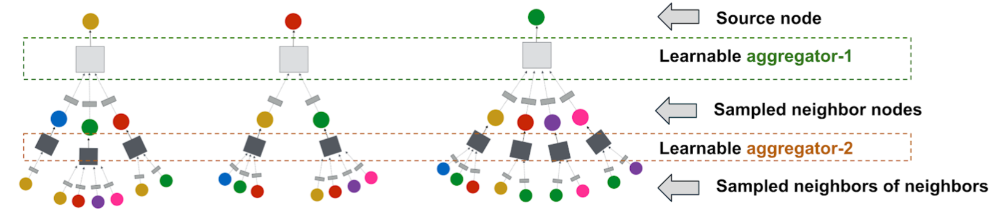
- Challenges:
- Scaling GCN-based node embeddings to graphs with billions of nodes and tens of billions of edges.
- Violation of core assumptions of GCN design in big data environments.
- Operating on the full graph Laplacian during training is infeasible for large, evolving graphs.
- Key Innovations (PinSage framework):
- On-the-fly convolutions:
- Traditional GCN algorithms use full graph Laplacian for convolutions.
- PinSage performs localized convolutions by sampling neighborhood and dynamically constructing computation graphs.
- Eliminates the need to operate on the entire graph during training.
- Constructing convolutions via random walks:
- Importance-based neighborhoods defined by simulating random walks and selecting neighbors with highest visit counts.
- Enables aggregators to consider neighbor importance and control memory footprint.
- Outperforms traditional K-hop graph neighborhoods by 46% in offline evaluation.
- Efficient MapReduce inference:
- Bottom-up aggregation of node embeddings suited for MapReduce computational model.
- Decomposed into map, join, and reduce operations for each aggregation step.
- Enables generation of embeddings for billions of nodes within a few hours on a cluster.
- On-the-fly convolutions:
- Offline evaluation:
- PinSage was evaluated on Pinterest data using visual and annotation embeddings.
- Outperforms content-based deep learning baselines in terms of Pin-to-Pin recommendation (Recall and MRR).
- PinSage shows 40% higher Recall and 22% higher MRR than the top baseline.
- User studies:
- Head-to-head comparison between PinSage and 4 baselines.
- PinSage recommended preferred items in around 60% of cases.
- PinSage combines visual, textual, and graph information for relevant recommendations.
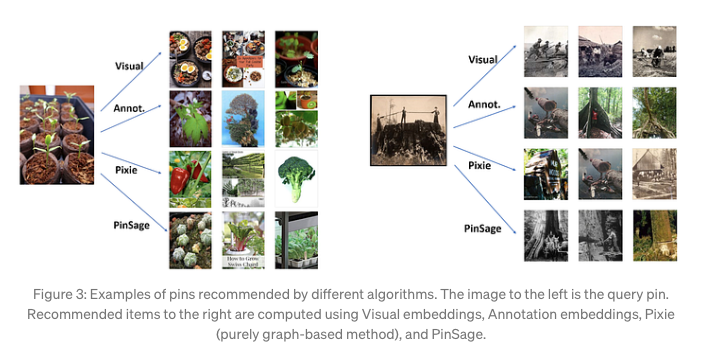
- A/B Test:
- A/B experiments conducted in Home Feed and Related Pin Ads.
- Compared against annotation embedding-based baseline.
- Observed around 30% relative improvement in user engagement rates.
- Conclusion:
- PinSage is a highly-scalable random-walk Graph Convolutional Network.
- Capable of learning embeddings for nodes in web-scale graphs with billions of objects.
- Substantial improvement in recommendation performance demonstrated through offline metrics, user studies, and A/B tests.
- Future implications:
- Supercharging the backend of product discovery.
- Enabling the future of shopping at scale with Pinterest.
- Increased impressions for “Shop the…” feature by 25%.
Uber Eats
Food Discovery with Uber Eats: Using Graph Learning to Power Recommendations
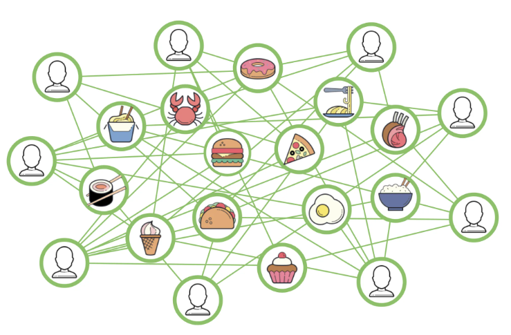
- Graph Learning:
- Machine learning tasks can be performed on graph-structured data.
- Learning representations of nodes in a graph encodes graph structure properties.
- Vector representations approximate the strength of connections between nodes.
- Objective is to find an encoding function that maps nodes to vector representations.
- Uber Eats Use-case:
- Graph neural network (GNN) approach used for encoding function.
- GNNs have been widely adopted for various tasks and effective for recommendations.
- GNN aggregates representations of neighboring nodes recursively.
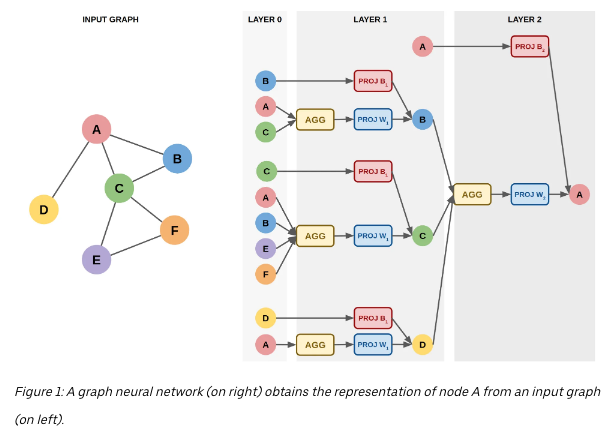
- Graph Learning:
- Graph neural network (GNN) approach is used to obtain node representations.
- Recursive aggregation of representations from neighboring nodes.
- Limiting recursion depth to two in the example.
- Encoding Function:
- Breadth-first search performed starting from node \(A\).
- Features \(x\) of nodes at two steps from \(A\) are obtained.
- Aggregation/pooling function (e.g., average) applied to aggregated features.
- Resulting neighborhood representation combined with node \(A\)’s own information.
- Matrix multiplication with learned weight matrices (PROJ W and PROJ B) used for projection.
- Recursive aggregation and projection to obtain the final representation of node \(A\).
- Advantage:
- Representation captures properties of node \(A\) and structural information of its neighborhood.
- Aggregates information about nodes connected to node \(A\).
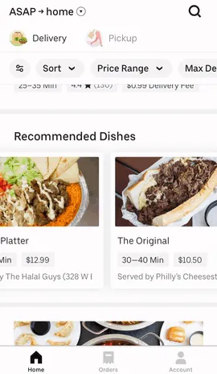
- Recommendation Surfaces:
- Uber Eats app has recommendation carousels for restaurants and menu items.
- Personalized recommendations are based on user preferences and past orders.
- Recommendation System Phases:
- Candidate Generation:
- Scalable generation of relevant dish and restaurant candidates.
- Pre-filtering based on factors like geographical location and user relevance.
- Personalized Ranking:
- ML model ranks pre-filtered candidates considering contextual information.
- Factors include day, time, and user’s current location.
- Candidate Generation:
- Utilizing GNNs for Recommendations:
- Creation of bipartite graphs representing users with dishes and restaurants.
- GraphSAGE, a GNN variant, chosen for scalability and efficient suggestions.
- Node and neighbor information combined through max or mean pooling.
- Sampling strategy limits nodes sampled at one and two-hop distances.
- Modifications made to GraphSAGE for handling different node types and weighted edges.
- Modifications to GraphSAGE:
- Additional projection layer for handling different node features (user, restaurant, dish).
- Projection layer ensures consistent vector sizes for different node types.
- Weighted edges introduced to incorporate information on order frequency and ratings.
- Adoption of hinge loss, a ranking-focused loss, for weighted edges.
- Loss Function and Low-Rank Positives:
- A weighted edge exists between a user u and a dish v if the user has ordered the dish at least once.
- To predict higher scores for positive edges compared to randomly selected negative edges, a margin-based approach is used.
- The problem with this loss is the interchangeability of high-weight and low-weight edges.
- Introducing the concept of low-rank positives, where a positive edge <u, v> is accompanied by a low-rank positive edge <u, l> with a lower weight.
- Revised loss incorporates a margin for ranking higher-weight edges above lower-weight edges, with a separate margin for negative samples.
- Hyper-parameter controls the relative importance of the negative sample loss and the low-rank positive loss.
- Utilizing Node Representations:
- Trained GNN provides node representations that capture similarity between nodes.
- Dot product and cosine similarity of user-item representations used as features in dish and restaurant recommender systems.
- Offline and online testing demonstrates improved accuracy of the systems.
- Evaluation and Performance Boost:
- Model trained on historical data and tested on order data from a specific split date.
- Cosine similarity used to rank dishes and restaurants for a user.
- Graph learning embeddings result in over ~20% performance boost compared to the existing production model on various metrics.
- Embeddings incorporated as features in the personalized ranking model, leading to a 12% boost in AUC compared to the baseline model.
- Graph learning similarity feature identified as the most influential feature in the recommendation model.
- Loss Function and Low-Rank Positives:
- A weighted edge exists between a user u and a dish v if the user has ordered the dish at least once.
- To predict higher scores for positive edges compared to randomly selected negative edges, a margin-based approach is used.
- The problem with this loss is the interchangeability of high-weight and low-weight edges.
- Introducing the concept of low-rank positives, where a positive edge <u, v> is accompanied by a low-rank positive edge <u, l> with a lower weight.
- Revised loss incorporates a margin for ranking higher-weight edges above lower-weight edges, with a separate margin for negative samples.
- Hyper-parameter controls the relative importance of the negative sample loss and the low-rank positive loss.
- Utilizing Node Representations:
- Trained GNN provides node representations that capture similarity between nodes.
- Dot product and cosine similarity of user-item representations used as features in dish and restaurant recommender systems.
- Offline and online testing demonstrates improved accuracy of the systems.
- Evaluation and Performance Boost:
- Model trained on historical data and tested on order data from a specific split date.
- Cosine similarity used to rank dishes and restaurants for a user.
- Graph learning embeddings result in over ~20% performance boost compared to the existing production model on various metrics.
- Embeddings incorporated as features in the personalized ranking model, leading to a 12% boost in AUC compared to the baseline model.
- Graph learning similarity feature identified as the most influential feature in the recommendation model.
-
Data and training pipeline: 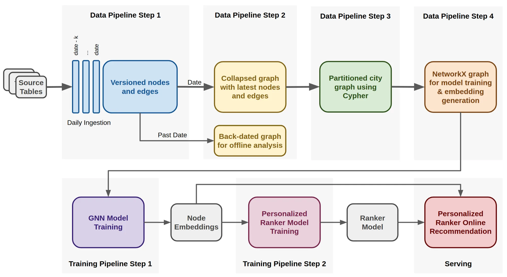
- Data Pipeline:
- Scalable data pipeline designed to train models and obtain real-time predictions in a production environment.
- Separate models trained for each city due to loosely connected graphs.
- Anonymized, aggregated order data used as input.
- Four-step data pipeline transforms the data into the networkx graph format required for training models.
- Pipeline extracts aggregated features not directly available in the raw order data.
- Capable of creating graphs for older time frames for offline analysis.
- Training Pipeline:
- First step involves pulling data from Apache Hive tables and ingesting it into HDFS as Parquet files containing nodes and edges information.
- Each node and edge has properties versioned by timestamp, enabling the construction of back-dated graphs.
- The second step retains the most recent properties of nodes and edges for a specified date and stores them in HDFS using Cypher format.
- Cypher query language in an Apache Spark execution engine is used in the third step to produce multiple graphs partitioned by city.
- In the fourth step, city graphs are converted into the networkx graph format.
- TensorFlow processes implemented for model training and embedding generation, executed on GPUs.
- Generated embeddings stored in a lookup table for retrieval by the ranking model during suggestion requests.
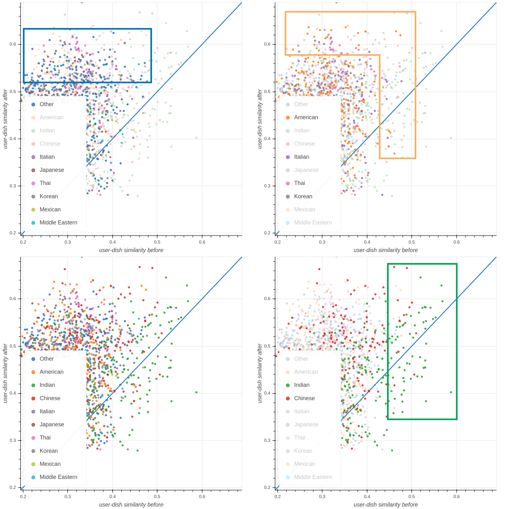
- Visualizing Learned Embeddings:
- Example of a hypothetical user on Uber Eats and their ordering history.
- Representation of the user is obtained after initial orders and after additional orders.
- The distance between these representations and popular dishes from different cuisines is computed.
- Patterns emerge in the visualization:
- Green box: Initially, the closest dishes to the user representation are Indian (expected due to initial Indian food orders). Some Chinese dishes also rank high, suggesting a correlation between these cuisine types.
- Orange box: American, Italian, Thai, and Korean dishes are closer to the user representation after additional orders, influenced by ordering Pizza, Doughnuts, Cobb Salad, and Chinese dishes.
- Blue box: Cuisines not initially close to the user representations increase in similarity after subsequent orders, indicating the model learned the user’s preference for new cuisine suggestions.
- Future Directions:
- Merging dish and restaurant recommendation tasks, currently treated separately, to reinforce each other.
- Transitioning from two bipartite graphs to a single graph with nodes for all entities, requiring adjustments to the loss and aggregation functions.
- Addressing the challenge of recommending reasonable items in data-scarce situations, such as new cities on the Uber Eats platform.
- Exploring meta graph learning to overcome data scarcity limitations, showing promising results.
Google Maps
ETA Prediction with Graph Neural Networks in Google Maps
- Google Maps uses machine learning to predict estimated time of arrivals (ETAs) by combining live traffic data with historical traffic patterns. To further improve the accuracy of ETAs, DeepMind collaborated with the Google Maps team, reducing inaccuracies by more than 50% in cities like Taichung. They employed a generalized machine learning architecture called Graph Neural Networks (GNN) to incorporate relational learning biases and model the connectivity structure of real-world road networks. Here’s an overview of how it works:
- Supersegment Division: Road networks are divided into “Supersegments” consisting of multiple adjacent road segments with significant traffic volume.
- Route Analysis: A route analyzer processes vast amounts of traffic information to construct Supersegments.
- Graph Neural Network Model: A novel Graph Neural Network model is used, optimized with multiple objectives. This model predicts the travel time for each Supersegment.
- By leveraging GNNs and considering spatiotemporal reasoning, Google Maps enhances its traffic prediction system, leading to more accurate ETAs for users worldwide.
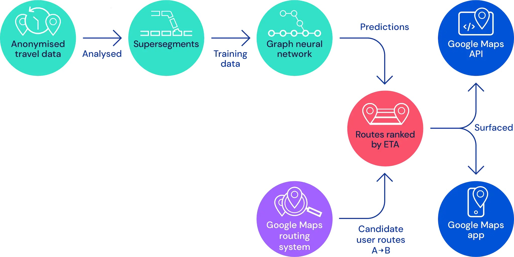
- When developing a machine learning system to estimate travel times using Supersegments, one of the key challenges is finding an appropriate architectural solution. The goal is to represent dynamically sized examples of connected road segments accurately, enabling a single model to achieve success.
- The initial proof of concept for this project utilized the existing traffic system, including the segmentation of road networks and the real-time data pipeline. In this approach, each Supersegment covered a set of road segments, with each segment having specific length and speed features. Initially, a separate fully connected neural network model was trained for each Supersegment. Although the results showed promise and demonstrated the potential of neural networks for travel time prediction, the dynamic sizes of the Supersegments required training millions of separate models, posing a significant infrastructure challenge.
- To address this issue, the team explored models capable of handling variable length sequences, such as Recurrent Neural Networks (RNNs). However, incorporating additional structure from the road network proved challenging. Instead, they turned to Graph Neural Networks (GNNs) because traffic modeling involves understanding how cars flow through a network of roads, and GNNs excel at modeling network dynamics and information propagation.
- In the GNN-based model, the local road network is represented as a graph, with each route segment corresponding to a node. Edges exist between segments that are consecutive on the same road or connected through an intersection. The model utilizes a message passing algorithm in which messages and their impact on edge and node states are learned by neural networks. From this perspective, the Supersegments are road subgraphs, randomly sampled in proportion to traffic density. This approach allows training a single model using these sampled subgraphs, which can then be deployed at scale.
- Graph Neural Networks (GNNs) generalize the concept of “proximity” in machine learning models, allowing for complex connections between road segments in traffic prediction.
- GNNs utilize message passing between adjacent nodes to capture information flow in the road network, improving predictive power and accounting for factors like adjacent and intersecting roads.
- Supersegments, consisting of connected road segments, can be of varying length and complexity but can be processed by the same GNN model.
- Graph structures used during training can vary significantly, leading to variability in model performance. MetaGradients were used to adapt the learning rate dynamically and stabilize the parameters during training.
- Combining multiple loss functions, including L_2 and L_1 losses on global traversal times and Huber and negative-log likelihood (NLL) losses on individual nodes, improved the model’s generalization ability and avoided overfitting.
- The MetaGradient technique is being explored to vary the composition of the loss function during training based on reduction in travel estimate errors.
- Close collaboration with the Google Maps team facilitated the application of these techniques at scale, overcoming research, production, and scalability challenges.
- The final model and techniques resulted in a successful launch, improving the accuracy of ETAs on Google Maps and Google Maps Platform APIs globally.